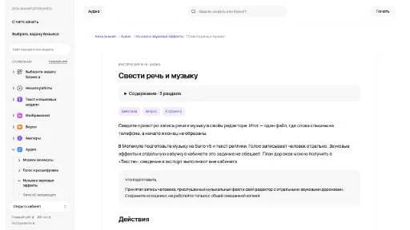
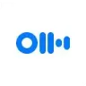

МолекулаАгрегаторы нейросетей
Молекула объединяет модели для текстов, изображений, видео и музыки. В одном аккаунте можно подобрать инструмент под этап работы, сохранить инструкции проекта и использовать готовые роли.
К задаче в МолекулеЗапись и обработка голоса: Проверьте короткий фрагмент со сложным шумом. Сравните разборчивость и сохранение естественного звучания.
Опишите дефекты собственной записи интервью перед обработкой звука. Укажите, где слышны вентилятор, щелчки и паузы; подготовьте перечень правок и контрольных фрагментов, чтобы оценивать разборчивость речи без потери тихих окончаний слов.
Составь план очистки записи интервью: постоянный шум вентилятора, редкие щелчки и тихие окончания слов. Расставь приоритеты обработки и предложи фрагменты для сравнения исходной и обработанной речи.

Молекула объединяет модели для текстов, изображений, видео и музыки. В одном аккаунте можно подобрать инструмент под этап работы, сохранить инструкции проекта и использовать готовые роли.
К задаче в Молекуле
Hume AI относится к инструментам, которые помогают обрабатывать голосовые обращения. Ещё одно направление работы: работать с синтезированной голосовой партией.
ScreenApp относится к инструментам, которые помогают переводить записанную речь в текст. Ещё одно направление работы: сокращать материал до основных положений.

Fish Audio используют, чтобы подготавливать озвучку текстового материала. Ещё одно направление работы: работать с синтезированной голосовой партией.

HitPaw VoicePea относится к инструментам, которые помогают обрабатывать голосовые обращения. Ещё одно направление работы: работать с синтезированной голосовой партией.

Notta рассчитан на задачи, где нужно переводить записанную речь в текст. Ещё одно направление работы: сокращать материал до основных положений.

Claap рассчитан на задачи, где нужно готовить ответы на обращения клиентов. Ещё одно направление работы: обрабатывать голосовые обращения.

Grain используют для задачи: готовить ответы на обращения клиентов. Ещё одно направление работы: обрабатывать голосовую запись.

Krisp используют, чтобы обрабатывать голосовые обращения. Ещё одно направление работы: переносить содержание материала на другой язык.

LALAL.AI разделяет вокал и инструментальные составляющие аудио с помощью ИИ. Обработка также предусмотрена для звуковых дорожек видео, а отдельные средства направлены на удаление помех и нежелательных звуков. Для включения этих операций в другие сервисы у продукта описан программный интерфейс.
Oxolo создаёт видеоматериалы с участием ИИ для задач электронной торговли. Продукт ориентирован на компании, которым нужны маркетинговые ролики для представления товаров. Основное назначение связано с подготовкой такого контента; само создание видео не подтверждает рост продаж или определённую реакцию аудитории после размещения.
NoteVocal относится к инструментам, которые помогают переводить записанную речь в текст. Ещё одно направление работы: превращать материалы в рабочие заметки.

Adobe Podcast помогает записывать разговоры и готовить речь к публикации в браузере. Enhance Speech обрабатывает шум и эхо, а Studio позволяет работать с записью и расшифровкой.

Agentpro AI используют, чтобы связывать действия в автоматизированный процесс. Ещё одно направление работы: готовить ответы на обращения клиентов.

В инструменте «HyNote» можно разбирать содержимое документов. Ещё одно направление работы: сокращать материал до основных положений.

Otter.ai используют для расшифровки разговоров и подготовки заметок по встрече. Имена, решения и поручения следует сверять с записью.
В инструменте «WellSaid» можно подготавливать озвучку текстового материала. Ещё одно направление работы: обрабатывать голосовую запись.

В инструменте «Rewind AI» можно выполнять задачи с веб-страницами. Ещё одно направление работы: превращать материалы в рабочие заметки.
AudioPen помогает превратить высказанную мысль в оформленный текст. Диктовку полезно проверить по смыслу, прежде чем использовать её как заметку или письмо.
Cleanvoice AI обрабатывает разговорные записи, удаляя слова-паразиты, лишние звуки артикуляции и затянувшиеся паузы. Предусмотрена работа с разными языками и экспорт монтажной последовательности. Инструмент ориентирован на подготовку подкастов, где нужно убрать речевые помехи и передать результат в дальнейший рабочий процесс.
«Nonoisy» отделяет объект от фона изображения.

В инструменте «Audio Enhancer» можно обрабатывать голосовую запись.
В инструменте «Rev AI» можно переводить записанную речь в текст. Ещё одно направление работы: сокращать материал до основных положений.
Verbit рассчитан на задачи, где нужно переводить записанную речь в текст. Ещё одно направление работы: обрабатывать голосовую запись.

Speechify озвучивает письменный текст с помощью синтетических голосов. В приложении можно выбирать варианты звучания и язык, чтобы подстроить чтение под свои предпочтения. Продукт доступен на разных платформах и объединяет преобразование текста в речь с настройкой выбранного голоса.
Xound обрабатывает голосовые записи с помощью ИИ, уменьшая фоновый шум и корректируя звучание. В набор входят работа с высотой тона, настройка голоса и сжатие динамического диапазона. Инструмент предназначен для авторов контента, которым нужно сочетать удаление помех с более ровной громкостью речи.

Звукограм преобразует текст в речь с помощью нейроголосов, включая варианты на русском языке. В наборе также описаны расшифровка аудио и видео, озвучивание субтитров и извлечение звуковой дорожки из YouTube. Дополняют работу библиотеки музыкальных материалов и звуковых эффектов для подготовки медиапроектов.
«Adobe Speech Enhancer» отделяет объект от фона изображения.

iMyFone Filme (MagicMic) рассчитан на задачи, где нужно подготавливать озвучку текстового материала. Ещё одно направление работы: готовить видеоматериалы для публикации.

Noiz AI относится к инструментам, которые помогают подготавливать озвучку текстового материала. Ещё одно направление работы: работать с синтезированной голосовой партией.

Sonix рассчитан на задачи, где нужно переводить записанную речь в текст. Ещё одно направление работы: сокращать материал до основных положений.
Auphonic предназначен для подготовки записи к прослушиванию. Автоматическую обработку нужно оценивать по речи, паузам и одинаковой громкости соседних эпизодов.
«Audo AI» представлен в разделе «Аудио (голос и музыка)». При выборе проверьте нужную операцию и условия работы с результатом.
Superwhisper превращает речь в текст для ввода в приложения. Режимы задают тон и формат результата, словарь помогает с терминами, а локальная и облачная обработка требуют разной настройки.
Страница 1 из 1
Для удалённого разговора сначала сделайте короткую пробу с каждым участником. Проверьте выбранный микрофон, расстояние и отсутствие звука из динамиков. Перегрузка и сильное эхо могут остаться заметными после автоматической обработки, поэтому полезнее исправить условия до основного интервью.
Сохраните оригинальную запись и выберите участок с обычной речью, тихим ответом и фоновым шумом. Эти моменты помогают оценить результат. Не подменяйте проверку разборчивости впечатлением о громкости: более громкая версия не обязательно лучше сохраняет слова и естественный тембр.
Adobe Podcast включает Enhance Speech для обработки шума и эха, а также браузерную работу с записью. Сравнивайте исходную и изменённую речь на одном фрагменте. Особое внимание уделите согласным в начале слов и окончаниям тихих предложений.
Descript позволяет связывать монтаж с расшифровкой и применять инструменты улучшения звука. Его удобно проверять, когда интервью ещё нужно сократить по содержанию. После удаления слов прослушивайте переходы: связный текст может скрывать резкую смену интонации.
Для выбора инструмента разделите задачи. Уменьшение шума, удаление повторного ответа и исправление ошибочного числа требуют разных действий. Обработка акустики не узнает правильную мысль автора. Если фраза сказана неверно, согласуйте её повторную запись или редакторское решение.
Прослушайте весь разговор в наушниках, затем на небольшом динамике. Убедитесь, что слова понятны, громкость не скачет и тихие участки не пропали. Для интервью с несколькими голосами сравните обработку каждого отдельно: одна настройка может влиять на них по-разному.
Перед загрузкой согласуйте запись и использование материала с участниками. Уточните правила хранения и доступ к проекту. После экспорта проверьте начало, склейки и окончание вне редактора. Если требуется выдать новый текст голосом, подходящие сценарии описаны в разделе генерации голоса.